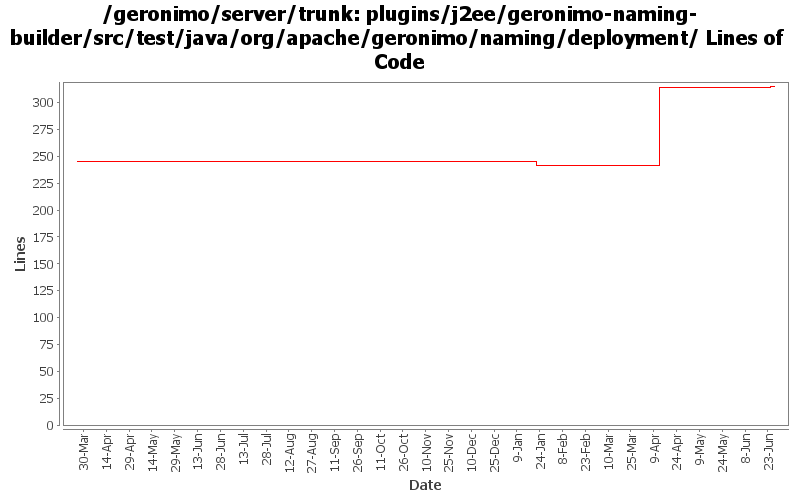

[root]/plugins/j2ee/geronimo-naming-builder/src/test/java/org/apache/geronimo/naming/deployment
 annotation
(2 files, 203 lines)
annotation
(2 files, 203 lines)

| Author | Changes | Lines of Code | Lines per Change |
|---|---|---|---|
| Totals | 9 (100.0%) | 150 (100.0%) | 16.6 |
| gawor | 2 (22.2%) | 83 (55.3%) | 41.5 |
| djencks | 6 (66.7%) | 57 (38.0%) | 9.5 |
| xuhaihong | 1 (11.1%) | 10 (6.7%) | 10.0 |
cf openejb rev 958340. marshal persistence.xml in the correct namespace, marshal methods names changed
1 lines of code changed in 1 file:
GERONIMO-5190 use openejb-jee jaxb tree for spec dds
23 lines of code changed in 1 file:
GERONIMO-5025, GERONIMO-5117. Make jndi supported directly by Modules and straighten out which contexts are shared when.
5 lines of code changed in 1 file:
a. remove the use of configurationUrl \n b. Add a BundleAwareReference interface
10 lines of code changed in 1 file:
GERONIMO-5253: Publish application name to JNDI (java:app/AppName)
1 lines of code changed in 1 file:
GERONIMO-5251: Support environment entires of type Class or Enum
82 lines of code changed in 1 file:
GERONIMO-5025 Initial work on ee 6 scoped jndi stuff. Minimal testing so far
28 lines of code changed in 1 file:
GERONIMO-3954 allow overrides of env-entry values in geronimo plan
0 lines of code changed in 2 files: